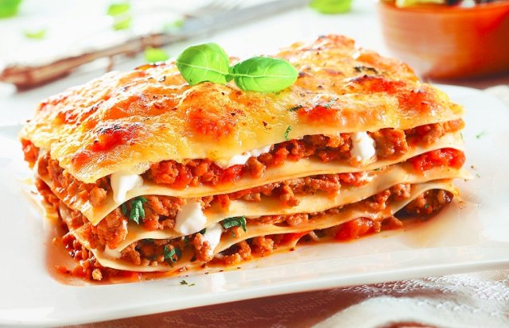

Home
Lasagna recipe

Ingredients:
- 300 g lasagna noodles, uncooked
- 200 g ground beef
- 200 g ground Italian pork sausage
- 1 onion, diced
- 1 clove garlic, minced
- 200 can Italian-seasoned stewed
- tomatoes
- 350 g cans tomato paste
- 2 tbsp Italian seasoning
- 3 cup ricotta cheese
- 1/2 cup grated Parmesan cheese
- 2 eggs, beaten
- 2 tbsp dried parsley
- salt and pepper to taste
- 450 g shredded mozzarella chees
Method:
- Cook noodles according to package directions; drain.
- Meanwhile, in a skillet over medium heat, brown beef, sausage and onion; drain.
- Add garlic, undrained tomatoes, tomato paste and Italian seasoning; simmer for about 10 minutes.
- In a large bowl, blend together ricotta and Parmesan cheeses, eggs and seasonings.
- Spread 1/2 cup of beef mixture in a lightly greased deep baking pan.
- Layer as follows: 1/3 each of noodles, cheese mixture, beef mixture and mozzarella cheese.
- Repeat layers, ending with mozzarella.
- Cover with aluminum foil.
- Bake at 175 degrees for 45 minutes to one hour.
- Let stand for 10 minutes before slicing
Bon appetit!